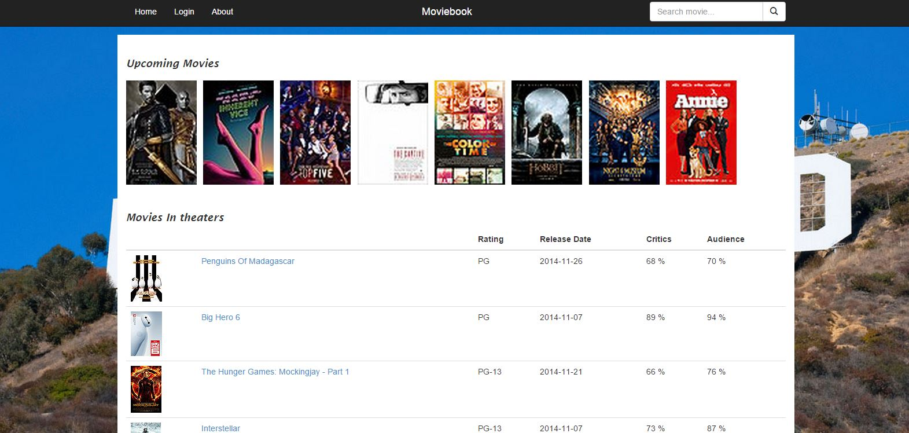

Project Overview

Moviebook is a social networking web application with movie data from the Rotten Tomatoes API. It allows people to create their profiles, like and comment on movies and follow other users.
It is a MEAN (MongoDb, Express, Angular, Nodejs) stack web application so the performance is super fast. There are no full page refreshes except when the user logs in or logs out. The web app is responsive,
so it works well on smaller screens.
The Rotten Tomatoes API provides access to Rotten Tomatoes' ratings and reviews, allowing one to build applications and widgets enriched with Rotten Tomatoes data.
Moviebook has the following features:
- Upcoming movies: The Home Screen shows the upcoming movies in a beautiful grid
- Movies in theaters: The Home Screen also shows the movies already in theatres
- Movie Search: The user can search for a movie from the navigation bar
-
Movie Details: The Movie Details page shows various details of a selected movie. It contains the movie poster,
synopsis, release date, rating, some similar movies and user comments. If you are logged in, you can like the movie and/or comment on it
- User Profile: The user can view his profile here. This page displays his profile pic, email, about me along with some of the movies he has liked and the users he is following. He can also delete his account from here.
-
Follow a user: When some user comments on a movie, you can go to his profile by clicking on his name in the comment header. On his profile you can follow the user.
Once you have followed him, his profile picture would be displayed on your profile for easy access to his profile.